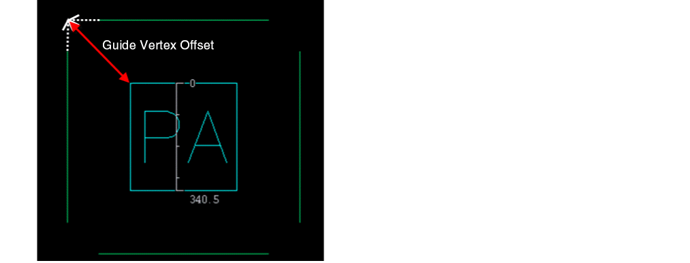

5
Creating Package Layout
This chapter covers generating the package layout from the package schematic and performing edits on the package layout. To complete the physical layout, use GFS to generate the layout. If there are flip chip attachments, use the appropriate instance properties to place the components on the top or bottom of the substrate with the correct orientation. Connect balls to IO pads through curved paths by using flight lines and connectivity/DRC markers in the Annotation Browser. You need to fix shorts on signals with power and ground planes by creating dynamic shapes and performing voiding. The synchronized edits in the die abstract and layout are covered in the Edit-in-Concert chapter.
The chapter includes the following sections:
- Generating from Source
- Attaching Dies
- Creating Shapes for Routing
- Performing Interactive Routing
- Introduction to the Push-and-Shove Feature
- Creating Void Shapes to Insulate Signal Shapes from Power or Ground Planes
Generating from Source
The package layout is generated from the package schematic using the existing Generate from Source (GFS) functionality to place the components appropriately.
During GFS, each layout instance, net, and terminal is created. Individual components in the schematic are represented as the TILP instances that contain type specific information of their function and parameters, such as rotation, mirrored, flipped, and so on, which control the re-layering and geometry of the shapes contained within the components.
The GFS process creates a single level of layout hierarchy. This layout hierarchy may bind to a different schematic hierarchy - the binder component in the Virtuoso RF Solution maintains the correspondence between objects in the schematic and layout hierarchies.
For details about GFS, refer to
Attaching Dies
Depending on the mode of attachment, the dies in the Virtuoso RF solution can be classified as wirebonded and flip chip dies, as described below.
- Wirebonded die: Uses bond wires to establish connections. Bond wires are connected to the die IO pads on one side and the bond wire endpoints or bond fingers on the other.
-
Flip chip die: Uses solder balls to establish connections. To connect the dies, solder balls are placed on the top metal layer or on the metal layer at the back. These solder balls and the metal pads beneath them are called bumps. Bumps that lie between a die and the package substrate are called flip chip bumps.
This section covers the following topics:
Wirebonded Dies
The key components of wirebonded dies are the following:
- Guides: Paths drawn around dies to define valid placement locations for bond wire endpoints and bond fingers.
- Bond wires: Wires, usually made of gold, that connect the die pads either to bond fingers on the component substrate or to die pads on another die.
-
Bond fingers: A metal pad on the outer layer of the component substrate to which a wire bond is attached. Bond fingers help establish electrical connections between the component substrate and the die.
This section covers the following topics:
Working with Guides
You can create one or more line-shaped or arc-shaped guides around dies.
The following diagram shows the connections in a wirebonded die, where the bond fingers are placed on a guide.
You can view wirebonds in the Objects panel of the Palette assistant. You can change the Visibility (V) settings of wirebonds through the Palette. You can also use the environment variable, pteInfraWirebondProfileColors, to assign colors to wirebond profiles.
You can use the SKILL functions, leGetWirebondProfileVisible and leSetWirebondProfileVisible to view or set the visibility of wirebond profiles, respectively.
This topic describes the following procedures:
Creating a Guide
- Select the die for which you would want to create a guide.
-
Choose Module — Guide — Create to open the Create Guides form.
The Create Guides form is not displayed when: -
Select a Die Side value to specify the side along which one or more guides are to be created: All, North, East, West, or South.
The default value is All. Line-shaped guides are created on all four sides of the die. The following images depict die sides.

- Specify the distance of the guide in the Distance field and the reference from which the distance is to be calculated.
-
Select From edge of the die to specify that the distance is to be calculated from the corresponding die edge. For example if the Die Side is set to North, the distance is calculated from the top edge of the die. This option is selected by default.
-
(Optional) Select and specify a Radius value to create arc-shaped guides. The curvature of the guide is calculated based on the specified radius.
-
(Optional) Select Guide Vertices offset and specify the distance of the diagonal line drawn from the two vertexes of the guide to the center of the die.
 -
Click Apply or OK to create the guide.
You can now create bond wires with their endpoints on the guides.
Editing a Guide
The Module – Guide menu includes the Stretch and Move commands that let you edit guides.
- Choose Module — Stretch.
-
Select the guide to be stretched. Drag lines are displayed on the guide.If the guide is not selectable, enable the selection setting of the corresponding layer-purpose pair in the Palette assistant.Three boxes are displayed at either ends and in the middle of the selected guide. Hover the cursor over a box to stretch the guide from that position.
-
Click and drag the guide to stretch it in the required direction. Release the pointer.
The guide is stretched. Any existing bond fingers or wires are re-positioned accordingly.
-
Choose Module – Move. Alternatively, you can use the shortcut key
M. - Select the guide to be moved.
- Move the pointer to a new location.
- Click where you want to place the guide. The guide is moved to the new location. Any existing bond fingers or wires are moved accordingly.
The following images depict the movement of guides with bond fingers.
Working with Bond Wires and Bond Fingers
Bond wires are wires of very fine diameter, typically made of aluminum, copper, silver, or gold, that connect the die IO pads to the package substrate. Virtuoso provides options to create and edit bond wires.
This section covers the following topics:
Creating Bond Wires and Bond Fingers
Virtuoso supports both freestyle and guide-based placement of bond wires. Before creating bond wires and bond fingers, ensure the following:
-
The wire profiles are defined in the technology file using the techCreateWireProfile SKILL function:
-
For guide-based placement, the guides are in place.
- Select the level-1 pins or IO pads for which bond wires are to be be created. It is recommended that you create bond wires for only one guide at a time. For example, choose all the IO pads for which bond wires are to be be created in the guide in the top direction.
- Choose Module – Bond Wire – Create.
- Move the pointer over the required guide to see the valid placement locations for bond wire endpoints or fingers.
-
Press
F3to display the Create Bond Wire form.

- Select one of the following options to specify what you want to create:
-
Select a Wire Profile value. This option lists all the wire profiles that are defined in the technology file. A wire profile defines bond wire properties such as the width of the wire. These properties are not listed in Property Editor and therefore cannot be edited after the bond wires are created.
- Set Snap To to specify whether the created components are to automatically snap to Bond Finger, Guide, or Die IO.
- Select Uniformly Distribute Objects on Guide to distribute bond fingers evenly along the guide. When the option is not selected, the pkgMinBondwireSpacing constraint value is used to determine the minimum spacing between adjacent bond fingers.
- Specify the Bond Finger parameters. The Bond Finger section is available for edit only mode when creating bond fingers.
- Select a bond finger definition from the Definition list.
- Click Add to create a new bond finger definition. The Add Bond Finger Definition form is displayed.
-
Click OK. The new bond finger definition is automatically selected in the Definition list. For more information, see Creating Bond Wires and Bond Fingers. Select one of the following Alignment types for bond fingers:
- along wire: Aligns bond fingers in the same direction as the bond wires.
- orthogonal to die: Determines the die edge that is closest to IO pads and aligns the bond fingers orthogonal (perpendicular) to this edge. The direction of the bond finger does not change even when it is moved to another die edge.Click Hide.
- Click to place the bond wires and bond fingers at the required locations.
-
Follow steps 1 through 6 to create bond wires (and bond fingers) in all directions, as shown in the following image.
Bond wires and bond fingers are created as per your specifications. The bond wire end points are centered to the bond finger and die pins. A single net connects each IO pad to its corresponding bond wire and bond finger.
The Check Against Source (CAS) command does not report mismatches between wire bond and finger instances.
Creating Bond Finger Definitions
The Virtuoso RF solution supports the creation and reuse of bond fingers. When creating bond wires, instead of specifying bond finger parameters each time, you can choose from a list of predefined bond fingers. To define bond fingers:
- Open the Create Bond Wire form.
-
Click Add next to the Definition option in the Bond Finger section. The Add Bond Finger Definition form is displayed.

- Specify a unique value for Definition Name.
- Select a shape for the bond wire: rectangle, oblong, circle, or Padstacks. Depending on the selected shape, the remaining options vary.
- Click OK.
Editing Bond Wires and Bond Fingers
The Module – Bond Wire menu includes the following commands that let you edit bond wires and bond fingers:
-
Move wire or finger: Lets you move bond wires and fingers individually to a new position on the guide. To move a bond wire:
-
Choose Module – Bond Wire – Move wire or finger. Alternatively, you can use the shortcut key
M. - Select the bond wire to be repositioned by selecting either the complete instance or the level-1 path of the bond wire instance.
-
Press
F3to display the Move form. In addition to the standard Move options, the form includes a Wire Bond section. Select Snap end points to specify the snapping behavior of bond wires. The snapping behavior differs based on the selection.- If the IO side of a bond wire is selected, the endpoint is snapped to the same net IOs.
-
If the finger side is selected, the snapping behavior depends on the Unlock finger setting.
- OFF (default): Endpoints of locked fingers are snapped to the nearest guide.
- ON: Endpoints are snapped to the nearest guide, finger of same net, or IO of same net.
- Select the required options in the Move form.
- Click Hide.
- Move the pointer to the required location. Click to place the bond wire.
The bond finger and bond wire are repositioned as follows:
-
Choose Module – Bond Wire – Move wire or finger. Alternatively, you can use the shortcut key
-
Update finger attach point: Lets you alter the point where a bond wire is attached to its bond finger.
- Choose Module – Bond Wire – Update finger attach point.
- Click the bond finger for which the point of attachment is to be changed.
- Move the pointer to the required location.
- Click to indicate the new attachment point.
The bond finger attachment point is updated as shown in the following images.

Flip Chip Dies
For flip chip attachments, die instances on the package are flipped if the IO pads on the die are on the front-side of the IC and connected to the top of the package substrate. In addition, if they are being mirrored, they are connected to the bottom of the package substrate. If the die instance attaches to an internal layer in the package substrate (attachment in a cavity for instance), the layer offset must be specified.
Here are some of the parameters to be set for attaching the die or package TILP to the appropriate side of the substrate. Select the die instance in the package layout and right-click to view the Parameter tab of the Edit Instance Properties form.
-
Angle- placement angle of the die
The following Translation table defines what angle is to be set based on instance orientation:
Schematic Orientation TILP Angle
Orientation of the layout instance during GFS is set based on the lxGenerationOrientation environment variable, which is, by default, set toR0, so TILP angle is always set to 90.
When the environment variable is set topreserve, the layout instance orientation takes the value from schematic instance and sets accordingly as mentioned in the table. - Flipped- flipped before placing
- Die Stack Order/Package Stack Order- die/package TILP stack order
- Mirrored- mirrored to its original position with respect to the package. A mirrored die is placed under the package. Stackup Offset/Package Stackup Offset- distance from the die/package TILP stack
- Shrink Factor- ratio of shrinking the die optically while placing on the package, ranges from 0–1
- X Thermal Shrink Factor (%)- percentage of shrinking the die thermally on the x-axis. For details, refer to Applying the Thermal Shrink Factor.
- Y Thermal Shrink Factor (%)- percentage of shrinking the die thermally on the y-axis.
Refer to the following illustration when choosing the parameters. A sample package stackup is shown with four layers (intervening dielectrics are not shown).
Here are the various options of bump attachments.
 |
|
 |
|
|
|
|
 |
|
|
|
|
 |
|
|
|
|
|
|
Configuring a Module Stack
In a multi-chip module or stacked IC, use Module – Configure Module Stack to define the arrangement of dies. The arrangement definition includes the following:
- Wirebonded or flipchip type of dies
- Position of dies in the stack
- Mirrored or not, that is, if they are placed at the front or at the rear side of an interposer
To define parameters while configuring a module stack:
- Define whether a die is a flipchip.
- Specify the order of a die or object in a stack.
-
Define whether a die is mirrored.
Applying the Thermal Shrink Factor
The Virtuoso RF Solution lets you encapsulate dies of different semiconductor materials into a single package. Within a package, flip chip die-to-package assembly is done by soldering the IO pads in the die to the package substrate by heating both the die and the package. The bump flux in the flip chip die melts and fuses with the package substrate. Such connections might be impacted by the differences in the coefficients of thermal expansion (CTEs) of the semiconductor materials that are used in the package. Consider the following example:
To overcome such connectivity issues due to differences in CTEs, Virtuoso lets you set the thermal shrink factor for such dies. This option adjusts the initial positions of IO pads such that connectivity is not broken when the dies are heated. It is recommended that you apply the thermal shrink factor before defining connectivity, as shown in the following example:
Thermal shrink factor is defined as a parameter of the TILP instance. X Thermal Shrink Factor and Y Thermal Shrink Factor are percentage values for expansion or contraction along the x-axis and y-axis, respectively.

- Negative Thermal Shrink Factor (thermal shrink) is applicable when the package expands more than the die abstract.
- Positive Thermal Shrink Factor (thermal expansion) is applicable when the abstract die expands more than the package.
Thermal shrink is applied on IO pads as a factor of the distance of IO pads from center of the die.
dx = X * x_thermalShrink
dy = Y * y_thermalShrink

Closer the IO pad is to center of the die, less is the effect of thermal shrink factor. Farther the IO pad is from the center of the die, greater is the effect of thermal shrink factor.

Impact of Applying Thermal Shrink
-
Edit-in-Concert: When thermal shrink is applied to a TILP die, the IO pads in the die are adjusted, but the IO pads in the corresponding die layout view remain at their actual positions. This may lead to visual misalignments in the Edit-in-Concert mode. When you launch the Edit-in-Concert mode, a warning message indicating the cause of these misalignments is displayed.
For more information about the Edit-in-Concert mode, see Editing-in-Concert.
- LVA Checker and Fixer: When thermal shrink is applied, despite visual misalignments in the Edit-in-Concert mode, the LVA checker does not report any misalignment violations and the Annotation Browser does not display any violation markers. For more information about the LVA checker and fixer, see Checking and Fixing IO Pad Locations.
-
Optical Shrink: Optical shrink factor reduces the size of the entire die, whereas thermal shrink factor only shrinks (or expands) the IO pads. When both optical and thermal shrink factors are specified, the optical shrink factor is applied first. Thermal shrink factor is then applied to the optically shrunk die.

Creating Shapes for Routing
The Virtuoso Layout recognizes the curved shapes, polygons, rectangle, and paths. You can edit the curved shapes in various ways, such as updating the shape, rotating, or stretching. Additionally, you can modify a regular shape to curved shape and edit the curved shape to add new arcs.
Creating Curved Polygon
Follow these steps to create curved polygons in the package layout:
- Run the Create Polygon command.
- Add arc segment by selecting Add an arc segment. The curved polygon and the arc segment are created using the LPP selected in the palette.
-
Create the polygon on the canvas. You can right-click and click Toggle Arc Creation as needed to complete the arc.

- Run the Create Rectangle command.
-
Select the Round Corner check box and specify the value for the Radius field. The smallest possible shape is a circle of the given radius.
- Run the Create Path command
- Select Curve from the End Type drop-down list box.
-
Specify the Width to ensure that path ends are rounded semi-circles of the given width. Intermediate bends are rounded quarter-circles of the given width.

Performing Interactive Routing
The interactive and assisted routing capability of the Virtuoso RF Solution enables you to route connections interactively within the Virtuoso environment. It provides efficient ways to interactively and automatically route connections in order to meet critical design constraints and rules. Interactive routing lets you do the following:
- Complete critical nets before automatic routing.
- Finish incomplete nets left after automatic routing.
Apart from the usual capability of routing, interactive routing has been enhanced to support curved paths that are available in cellviews along with package constraints. The bindkey P that is used for the Create Wire command is defined to create a curved path when you have a package design.
Managing Curved Shapes in Wire Editor
The Wire editor in the Virtuoso RF Solution has been enhanced to create curved paths instead of providing the choice between normal OA paths and pathsegs. Curved paths are OA paths with curved extensions. The Virtuoso RF Solution enhancements include additional snap modes (L45LongFirst and L45AngleFirst), padstack exit from intermediate layers, support for instances used as pins, padstack and via center snapping.
For details, refer to
Introduction to the Push-and-Shove Feature
The push-and-shove feature applies to routing objects, such as wires and vias. Static objects, such as pins, bumps, and bond fingers, are not considered routing objects. This capability lets you push wires out of the way by either automatically adjusting the new wire or by pushing an existing wire.
Enabling this feature enhances correct-by-construction design and makes the design DRC-and shorts-aware. For more information, see
Creating Void Shapes to Insulate Signal Shapes from Power or Ground Planes
Voiding is an important step in creating the package layout that lets you route on ground/ power planes by automatically insulating signal nets.
Ground/power planes are typically used in packages to reduce the impedance of the power/ground supply network by lowering ohmic resistance and shielding nearby components from EM noise. If routing for other signals cannot be completed on the layers other than the ones devoted to power and ground, they must be completed on power and ground planes.
The Virtuoso RF solution includes a void generator that lets you generate void shapes in package layout designs. Void shapes are automatic shapes that insulate signal shapes (routing) from dynamic shapes such as power or ground planes. The power and ground planes are created on a dynamic purpose and the void shapes cut holes on the dynamic shape around the signal shapes. The effective conducting shape on power or ground is the Boolean subtraction of the void shapes from the dynamic shape.
Voiding helps designers route on the ground/power planes by automatically insulating signal nets. Void the shapes by using Module – Void Dynamic Shapes. It deletes the existing void shapes and creates voids to insulate signal shapes. By insulating the signal shapes from the ground/power planes, it eliminates shorts between shapes on signal and power/ground nets. You can also Module – Void Selected Dynamic Shapes to void a few selected shapes.

Before generating void shapes, you must create the required dynamic shapes. The technology file must define the dynamic purposes before dynamic shapes can be created. Refer to the Importing Libraries and ICs chapter for more details on how to set up dynamic purposes, functions, and relationships with voiding layers.
After creating the dynamic shapes and signal shapes, you can generate void shapes. Void shapes are generated to insulate signal paths or vias that have a different connectivity from the plane they are going through, as shown in the following figure:

In this example, a via connects layers M1 and GROUND; a second via connects layers GROUND, POWER, and M2. Voids are generated around the vias and paths in layer GROUND and around the via on layer POWER to insulate the NET1 signal from the respective planes.
Generating Void Shapes
The following diagrams demonstrate the flow for generating voids:

1. Create Dynamic Shapes
Dynamic shapes are the shapes on purpose dynamic, for example (L01 dynamic). Unlike signal shapes, dynamic shapes retain their connectivity, irrespective of the lxStickyNet property.
2. Create Signal Shapes
Signal shapes are the shapes on purpose drawing, for example (L01 drawing). Signal shapes are routing shapes such as pins, paths, and vias.
Example: Dynamic shape on (L01 dynamic) on net A and signal shapes on (L01 drawing) on net B.
3. Generate Void Shapes
Choose Module – Void Dynamic Shapes to generate void shapes. Void shapes are shapes created by the void generator on a specific layer, for example (L01_VOID drawing) for a dynamic shape on (L01 dynamic). Void shapes are stored in the database.

For each dynamic shape on (layer dynamic), the void generator searches for overlapping signal shapes in (layer drawing). The generator creates void shapes on (<layer>_VOID drawing) for shapes on different nets. In other words, if the nets of the dynamic and signal shapes are different, the void generator effectively removes parts of metal around the signal shape. The conducting shapes, which are the metal shapes left after removing the void shapes from the dynamic shapes, are the effective metal shapes that will be manufactured.
3. Convert Selected Dynamic Shapes
Choose Module – Void Selected Dynamic Shapes to convert dynamic shapes to static shapes. For details, refer to
Smooth and Trim Void Shapes
The void generator smooths the conducting shapes that result from voiding. This smoothing is required for manufacturability of the design. Sharp corners (of angles lower than 90 degrees) are rounded and the pkgMinAperture constraint is enforced. Void generation might split a dynamic shape into multiple conducting shapes or “islands,” as shown in the following image:

When a pkgMinArea constraint is present, the void generator trims the conducting shapes that are smaller than pkgMinArea value.
For information about constraints, see Support for Package Constraints.
Use the voidGeneratorTrimUnconnectedShapes environment variable to control trimming of unconnected conducting shapes. The default value is t. In this state, the unconnected conducting shapes are trimmed, as shown below. The small conducting shape is trimmed out because it is not connected to any pin. The large conducting shape is retained because either it is connected to a pin or it is the largest conducting shape.


Support for Package Constraints
The void generator honors the following constraints:
-
pkgMinSpacing: Specifies the minimum spacing between a signal shape and a dynamic shape. Therefore, this value indicates the width of voids. The
pkgMinSpacingvalues are defined in the technology file. The values differ for different types of signal object and nets:
For more information, see pkgMinSpacing in Virtuoso Technology Data Constraint Reference. -
pkgMinAperture: Specifies the minimum width of a piece of metal. Such pieces can be created by voiding a dynamic shape.
If a part of conducting shape is too narrow, the void generator removes it so that there is no violation of the
minApertureconstraint, as shown in the following image:
For more information, see pkgMinAperture in Virtuoso Technology Data Constraint Reference.
-
pkgMinArea: Specifies the square root of the minimum area of a metal shape. This constraint applies to the conducting shapes resulting from voiding dynamic shapes. The void generator generates void shapes so that there is no violation of the
pkgMinAreaconstraint.
For more information, see pkgMinArea in Virtuoso Technology Data Constraint Reference.
Dynamic Shape Priority
Dynamic shapes have a priority attribute that determines the order in which the overlapping dynamic shapes are voided.
The dynamic shape priority is associated with each dynamic shape for a given metal layer in a given layout. A dynamic shape with a higher priority is cut out from the dynamic shape with a lower priority.
The following figure represents a simple overlap scenario where a dynamic shape is being overlapped by a signal shape and the shape, in turn, overlaps another dynamic shape of lower shape priority.

To insulate the overlapping dynamic shapes, void shapes are created. These void shapes:
- Insulate the dynamic shapes from all the overlapping signal shapes.
- Insulate a dynamic shape from all the overlapping dynamic shapes that have higher priorities.
Return to top